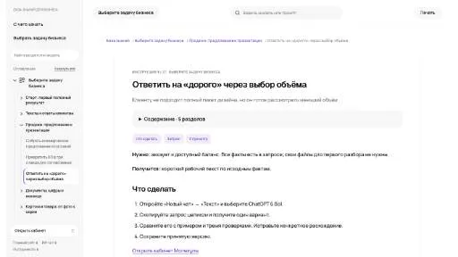

МолекулаАгрегаторы нейросетей
Молекула объединяет модели для текстов, изображений, видео и музыки. В одном аккаунте можно подобрать инструмент под этап работы, сохранить инструкции проекта и использовать готовые роли.
К задаче в МолекулеРаздел «Для менеджеров по продажам»: варианты ИИ для этой задачи, описания возможностей и переходы к обзорам. Сравните несколько решений на одинаковом примере.
Дайте утверждённый состав предложения и допустимые варианты объёма. В Молекуле можно подготовить объяснение различий; скидки и новые обязательства должны быть согласованы до отправки.
Клиент считает пакет фотосъёмки дорогим. Предложи ответ с двумя согласованными вариантами объёма: пять и десять товаров. Цены я вставлю сам; скидку не обещай.

Молекула объединяет модели для текстов, изображений, видео и музыки. В одном аккаунте можно подобрать инструмент под этап работы, сохранить инструкции проекта и использовать готовые роли.
К задаче в Молекуле«Aladdin AI» помогает отвечать на вопросы о продукте во время звонка.
«Autocalls AI» помогает обрабатывать телефонные обращения.
Для «CallZen AI» сначала определите свою задачу и требуемый результат. Карточка относится к направлению «Анализ данных».
«Dextra» представлен в разделе «Автоматизация». При выборе проверьте нужную операцию и условия работы с результатом.
Сравнивать «Icebreaker AI (chromewebstore.google.com)» с другими инструментами раздела «Социальные сети» удобнее на одинаковом исходном материале.
Сравнивать «Lead Shark» с другими инструментами раздела «Бизнес» удобнее на одинаковом исходном материале.
Сравнивать «Pipl AI» с другими инструментами раздела «Email» удобнее на одинаковом исходном материале.
Demand Forecast использует предыдущие продажи для построения прогноза спроса с помощью ИИ. Приложение ориентировано на планирование производства и запасов. Полученная оценка связывает исторические данные с будущими рабочими решениями, но остаётся модельным предположением: точность для конкретного периода зависит от условий, которые нельзя вывести из обещания продукта.
Для «Drippi AI» сначала определите свою задачу и требуемый результат. Карточка относится к направлению «Маркетинг».
Для «Geniechat» сначала определите свою задачу и требуемый результат. Карточка относится к направлению «Бизнес».
«LeadFinder» работает с материалами для социальных площадок.
«Luna (getluna.dev)» представлен в разделе «Email». При выборе проверьте нужную операцию и условия работы с результатом.
Сократик создаёт презентации по заданной теме, включая текст, изображения, графики и таблицы. Для оформления предусмотрены дизайн-шаблоны и онлайн-редактор. Продукт связывает получение первого варианта с возможностью его доработать, после чего результат можно перенести в PowerPoint или сохранить в PDF для просмотра и дальнейшего использования.
Сравнивать «Altera AI» с другими инструментами раздела «Маркетинг» удобнее на одинаковом исходном материале.

Gamma помогает создавать презентации, документы и страницы из описания и исходных материалов. Перед оформлением важно выстроить аргумент, проверить данные и испытать экспорт.
oliv AI помогает отделу продаж подготавливать исследовательские сведения перед встречами средствами ИИ. В ходе обсуждения инструмент ведёт заметки и обновляет CRM. Эти действия связывают предварительную подготовку и содержание состоявшегося разговора с дальнейшей работой менеджера над информацией о взаимодействии с клиентом.
Persuwise помогает готовить электронные письма с учётом сведений о потенциальном клиенте. Настраиваемые сообщения дополняются расширением Chrome для планирования встреч и последующих действий. Инструмент ориентирован на рабочую переписку, где персональная подача письма сочетается с организацией дальнейшего контакта, а не только созданием одного текстового черновика.
Сравнивать «uniqin AI» с другими инструментами раздела «Маркетинг» удобнее на одинаковом исходном материале.
«VanChat» помогает подбирать товары под запрос.
«bewise.ai» работает с задачами ведения клиентских данных.
«Journey Automagic AI» представлен в разделе «Маркетинг». При выборе проверьте нужную операцию и условия работы с результатом.
«sasha.ai» помогает соединить повторяемые рабочие действия.
Для «Signum AI» сначала определите свою задачу и требуемый результат. Карточка относится к направлению «Бизнес».
Slidecast создаёт презентацию по заданной теме, подбирая текст и оформление слайдов. К материалу можно добавить озвучивание выбранным голосом. После подготовки пользователь делится презентацией через ссылку либо QR-код и наблюдает за просмотрами, чтобы понимать использование материала аудиторией.
«Dex» работает с задачами ведения клиентских данных.
«Eclipse AI» разбирает данные для рабочего анализа.
Сравнивать «Glagol» с другими инструментами раздела «Русские» удобнее на одинаковом исходном материале.
PolygrAI анализирует мимику и характеристики голоса во время разговора. Сервис заявляет оценку признаков возможного обмана и эмоциональной окраски на основе поведенческих сигналов. Материал предназначен для рассмотрения встреч и собеседований, где требуется наблюдать за особенностями взаимодействия участников.
Aimylogic позволяет собирать чат-ботов и голосовые процессы в визуальном конструкторе. Российская платформа Just AI поддерживает распознавание естественной речи и обучение на намерениях пользователя. Доступны сценарии обзвона и IVR, а для внешних систем предусмотрены API и вебхуки.
Attention анализирует рабочие разговоры во время их проведения и предлагает обучение продажам. Решение ориентировано на торговых представителей, руководителей и отделы продаж. В одном сценарии объединяются рассмотрение содержания текущей беседы и развитие навыков, связанных с продажами, через предусмотренные инструменты анализа и обучения.
Colibri AI предназначен для анализа разговоров в работе продаж. В описании указаны рекомендации во время беседы, библиотека звонков с поиском и контрольные списки. Для команды проверьте, удаётся ли связать замечание с нужной репликой и вернуться к записи; рекомендация должна учитывать содержание разговора, а не заменять решение сотрудника.
«Nara» представлен в разделе «Чат-боты и ассистенты». При выборе проверьте нужную операцию и условия работы с результатом.
«Robin» помогает соединить повторяемые рабочие действия.
LazyAdmin помогает получать отчёты по данным Salesforce через вопросы на естественном языке. На странице представлены диаграммы, показатели, сводные панели и экспорт результатов в CSV.
Для «LinkPlus» сначала определите свою задачу и требуемый результат. Карточка относится к направлению «Социальные сети».
Сравнивать «People AI (people.ai)» с другими инструментами раздела «Анализ данных» удобнее на одинаковом исходном материале.
Для «yalo AI» сначала определите свою задачу и требуемый результат. Карточка относится к направлению «Чат-боты и ассистенты».
«Diarupt» связан с обработкой обращений клиентов.
Сравнивать «EasySell» с другими инструментами раздела «Бизнес» удобнее на одинаковом исходном материале.
Для «Persana AI (persana.ai)» сначала определите свою задачу и требуемый результат. Карточка относится к направлению «Email».
«VSL AI» помогает подготовить персонализированный видеоматериал.

Amplemarket объединяет средства поиска потенциальных клиентов и подготовки обращений к ним. В набор входят поиск контактных данных, работа с социальными источниками и обогащение информации. Инструмент предназначен для команды продаж, где сведения о контакте используются при организации персонализированного взаимодействия с возможным клиентом.
Leexi обрабатывает разговорную информацию и создаёт настраиваемые итоги звонков и встреч. Платформа связывается с CRM и предлагает разбор диалогов на основе данных. Продукт ориентирован на команды продаж, где сведения из общения нужно переносить в рабочий контекст и рассматривать вместе с результатами других обращений.
Presentacium создаёт презентации по теме или загруженному тексту с участием ИИ. Российский сервис подбирает шаблоны и изображения, а также структурирует содержание слайдов. Встроенный редактор PPTX и экспорт в PDF или изображения дополняют работу, доступную через браузер на разных устройствах пользователя.
Typewise помогает готовить ответы в продажах и клиентском обслуживании. Инструмент предлагает предсказание текста, автоматический ответ и аналитическую панель. Рабочий сценарий объединяет формулирование сообщения с рассмотрением сведений о процессе ответа, без обещания определённой экономии времени или повышения удовлетворённости клиентов.
«useposeidon.com» связан с поиском потенциальных клиентов.
«folk 2.0» работает с задачами ведения клиентских данных.
Страница 1 из 2